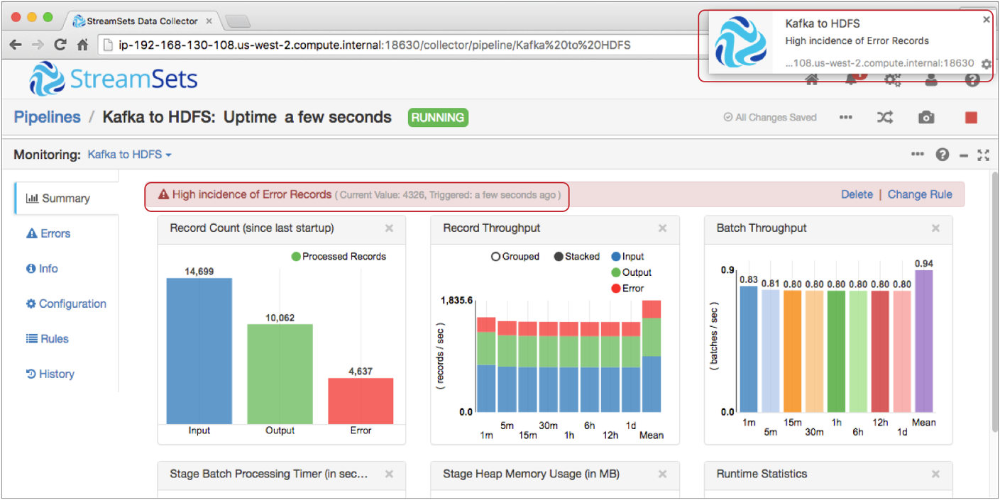
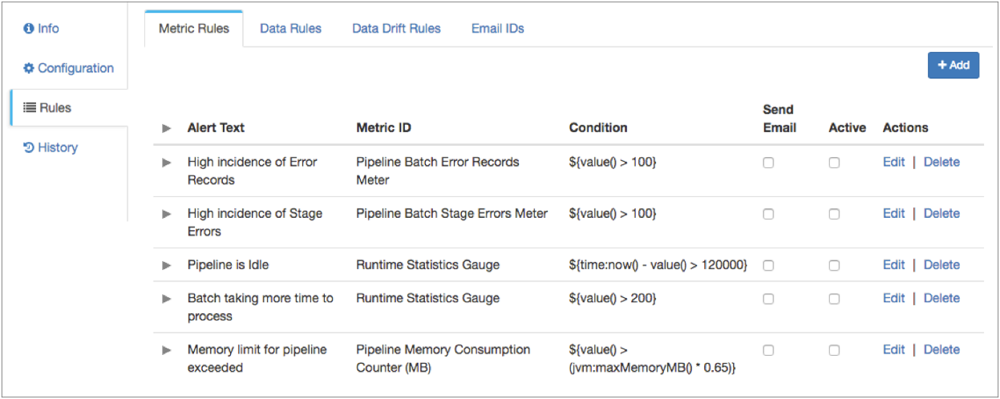
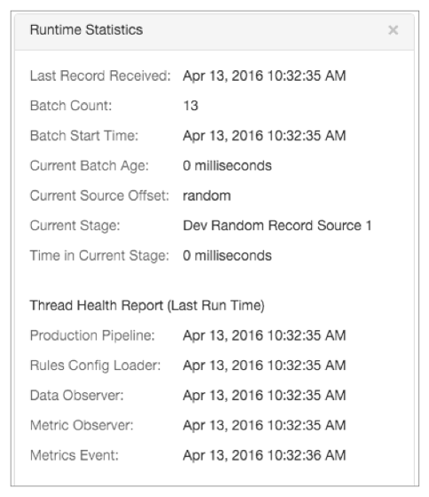
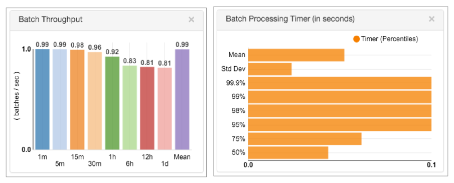

Rules and Alerts
Rules and Alerts Overview
Define rules to enable the Data Collector to capture information about a running pipeline. You can enable an alert for any rule to be notified when the specified condition occurs.
- Metric rule - Gathers statistics about the pipeline such as pipeline idle time or error record counts. Provides an alert when enabled.
- Data rule - Gathers details about data as it passes between two stages. Can provide a meter and alert.
- Data drift rule - Gathers details about data drift as data passes between two stages. Can provide a meter and alert.
- Pipeline monitoring - All alerts display when you view the pipeline in Monitor mode.
- Webhooks - All alerts trigger all configured webhooks.
- Email - You can configure rules to send email alerts.
Metric Rules and Alerts
Metric rules and alerts provide notifications about real-time statistics for pipelines.
When Data Collector runs a pipeline, the UI displays the pipeline in Monitor mode and displays real-time statistics about the pipeline. You can define and enable metric rules so that you are sent an alert when a statistic reaches a certain threshold.
For example, the Record Count and Record Throughput statistics in Monitor mode display the number of input, output, and error records that the pipeline has processed:

You can view the number of error records in these statistics. However, you might want to be notified when the number of error records reaches a certain threshold. You can enable the default rule for the Pipeline Error Records Counter metric to send an alert when the pipeline encounters more than 100 error records. When you enable the metric rule and the alert triggers, the alert displays in the Data Collector UI as follows:

When you enable a metric rule, it automatically enables an alert for the rule. You can also configure a metric rule to send email alerts to all email addresses associated with the pipeline.
You configure metric rules when you configure or monitor the pipeline. Data Collector provides a set of default metric rules that you can edit and enable for any pipeline. Metric rules take effect after you enable them.
You can also create custom metric rules. When you create a custom metric rule, you select the metric type. The metric type determines which statistic triggers the alert. You configure the condition that triggers the alert, and enter the text to display in the alert.
Default Metric Rules
Data Collector provides a set of default metric rules that you can edit and enable for any pipeline.
You might want to edit a default metric rule to modify the alert text or the condition for the rule. By default, none of the rules are enabled. Select Active to enable a rule.
Data Collector provides the following default metric rules:
Metric Types
You can use different metric types when you create a metric rule. The metric type determines which statistic triggers the alert.
After selecting a metric type, you select the metric ID which specifies the metric to use. For example, a metric ID can be a runtime statistics gauge or an input records meter. You then select the metric element that defines what the metric is measuring. A metric element can be a count, rate, median, minimum, maximum, or percentage. The possible metric ID and metric element vary by metric type.
Gauge
The gauge metric type provides alerts based on the number of input, output, or error records for the last processed batch. It also provides alerts on the age of the current batch, the amount of time a stage takes to process a batch, or the time that Data Collector last received a record from the origin.
The gauge metric type provides alerts about some of the Runtime Statistics displayed in Monitor mode:
- Last Batch Input, Output, or Error Records Counts
- Last Batch Error Messages Count
- Current Batch Age
- Time in Current Stage
- Time of Last Received Record
For example, you can configure a gauge metric rule that triggers an alert when the pipeline has been processing a batch for more than 5 minutes.
Counter
The counter metric type provides alerts based on the number of input, output, or error records for the pipeline or for a stage in the pipeline.
If you enable the monitor.memory property in the Data Collector configuration file, $SDC_CONF/sdc.properties, the counter metric type also provides alerts about the Stage Heap Memory Usage and the Heap Memory Usage statistics displayed in Monitor mode for the pipeline or for a stage:

- Pipeline batch count.
- Number of input records, output records, error records, or stage errors for the pipeline or for a stage in the pipeline.
- Amount of memory being consumed by the pipeline or by a stage - only when memory monitoring is enabled.
For any of the selected metric IDs, you can configure the alert to trigger on the count metric element.
For example, you can configure a counter metric rule that triggers an alert when a pipeline encounters more than 1,000 error records.
Histogram
The histogram metric type provides alerts based on a histogram of different record types and stage errors for the pipeline or for a stage in the pipeline.
The histogram metric type provides alerts about the Records Per Batch Histogram statistics displayed in Monitor mode for the pipeline or for a stage:

The histogram metric type includes metric IDs for the input records, output records, error records, or stage errors for the pipeline or for a stage in the pipeline. You can configure the alert to trigger on the metric elements displayed in the monitoring histogram: mean, standard deviation, percentage, or count.
For example, you can configure a histogram metric rule that triggers an alert when the mean of all input records processed by the pipeline reaches 10,000.
Meter
The meter metric type provides alerts based on rates of different record types and stage errors for pipelines or for a stage in the pipeline.
The meter metric type can provide alerts about the number of batches processed by the pipeline. The meter metric type can also provide alerts about the Record Count and Record Throughput statistics displayed in Monitor mode for the pipeline or for a stage:
The meter metric type includes metric IDs for the pipeline batch count and for the input records, output records, error records, or stage errors for the pipeline or for a stage in the pipeline. You can configure the alert to trigger on the following metric elements displayed in the Record Count and Record Throughput statistics: count, time rates, or mean.
For example, you can configure a meter metric rule that triggers an alert when the number of output records that a stage processes reaches 5,000 in one minute.
Timer
The timer metric type provides alerts based on batch processing timers for the pipeline or for a stage in the pipeline.
The timer metric type provides alerts about the Batch Throughput and Batch Processing Timer statistics displayed in Monitor mode for the pipeline or for a stage:
- Pipeline Batch Processing Timer - Amount of time for the pipeline to process a batch.
- <stage_name> Batch Processing Timer - Amount of time for a stage to process a batch.
You can configure the alert to trigger on the following metric elements displayed in the Batch Processing Timer statistics: mean, standard deviation, percentage, time rates, or count.
For example, you can configure a timer metric rule that triggers an alert when the mean amount of time that the pipeline takes to process a batch reaches 10 minutes.
Metric Conditions
When you configure a metric rule, you configure the condition that defines the threshold at which the metric rule triggers an alert. Use the expression language to configure the condition.
The expression language provides the following functions for creating metric rule conditions:
- value()
- Returns the value of the current metric selected in the metric rule. Use in
conditions for any type of metric rule.For example, the default rule for the Pipeline Error Records Counter metric includes the following condition:
${value() > 100}The alert is triggered when the pipeline encounters more than 100 error records.
- time.now()
- Returns the current time of the Data Collector machine as a java.util.Date
object. Use in conditions for gauge metric rules.For example, the default rule for the Runtime Statistics Gauge metric that checks whether the pipeline is idle includes the following condition:
${time:now() - value() > 120000}The alert is triggered when the current time is greater than the time of the last received record by 120,000 milliseconds.
- jvm:maxMemoryMB()
- Returns the Java heap size allocated to Data
Collector in MB. Use in conditions for counter metric rules.For example, the default rule for the Pipeline Memory Consumption Counter metric includes the following condition:
${value() > (jvm:maxMemoryMB() * 0.65)}The alert is triggered when the pipeline uses 65% of the Java heap size allocated to Data Collector.
For more information about using the expression language, see Expression Language.
Configuring a Metric Rule and Alert
Create a custom metric rule to receive alerts when a real-time statistic reaches a certain threshold. You can create metric rules and alerts when you configure or monitor a pipeline. You can edit or delete metric rules when they are not enabled.
-
In the Metric Rule dialog box, configure the following
properties:
Metric Rule Property Description Alert Text Text to display when the alert is triggered. Enter text that explains the reason for the alert. For example, "Over 1000 pipeline error records."
Metric Type 
Type of metric information the alert is based on: - Gauge
- Counter
- Histogram
- Meter
- Timer
Metric ID Metric to use. Provides a list of available metrics based on the metric type. Metric Element Metric element to use. Provides a list of available elements based on the metric ID. Condition
Condition to trigger the alert. Use the expression language to configure the condition. Send Email Sends an email when the alert is triggered. To send an email, add email addresses for alerts and configure the Data Collector email properties. For more information, see Configuring Email for Alerts.
Data Rules and Alerts
Data rules define the information that you want to see about the data that passes between stages. You can create data rules based on any link in the pipeline. You can also enable metrics and create alerts for data rules.
When you click a link between two stages while monitoring a pipeline, the Monitor panel displays summary statistics, data rules, and information about the stream of data that the link represents. The summary statistics that display are based on the data rules that you create.
You can configure data rules when you configure or monitor the pipeline. To create a data rule, you need familiarity with the data being processed. You might preview data or take a snapshot of data to help determine how to configure data rules.
Configuring a Data Rule and Alert
Viewing Data Rule Metrics and Sample Data
You can view the sample data generated by a data rule in Monitor mode. For data rules with metrics enabled, you can also view a graph that displays the metrics for the rule.
-
If necessary, in the Monitor panel, select the
Summary tab.
Sample data displays. When enabled for the rule, metrics display on the right.
In the following example, a data alert is triggered, and the Monitor panel displays the sample records and metrics graphic for a data rule between the Directory and Stream Selector stages:

Data Drift Rules and Alerts
You can create data drift rules to indicate when the structure of data changes. You can create data drift rules on any link in the pipeline. You can also enable metrics and create alerts for data drift rules.
| Data Drift Rule | Drift Function | Valid Field Data Types |
|---|---|---|
| Field name changes | drift:name() | list-map map |
| Field order changes | drift:order() | list-map |
| Number of fields | drift:size() | list list-map map |
| Field data type | drift:type() | any |
You can view the metrics and sample records for data drift rules in the same way that you view data rule metrics and records. For more information, see Viewing Data Rule Metrics and Sample Data.
For details about the data drift functions, see Data Drift Functions.
Data Drift Alert Triggers
Data drift alerts trigger when a change of the specified type occurs from record to record.
| Record Number | Number of Columns |
|---|---|
| 1 | 10 |
| 2 | 10 |
| 3 | 15 |
| 4 | 10 |
Data drift functions include an ignoreWhenMissing flag to determine the behavior when the specified field does not exist. When the specified field is missing and ignoreWhenMissing is set to true, an alert is not triggered.
When the specified field is missing and the ignoreWhenMissing flag is set to false, the expression triggers an alert for the missing field, and again for the next record when the field is present.
${drift:type('/UserID', false)}
Say all records include the UserID field, and then a single record passes without the UserID field. This expression triggers an alert for the record with the missing field, and again when the next record arrives that includes the UserID field.
Configuring Data Drift Rules and Alerts
-
In the Data Drift Rule dialog box, configure the following
properties:
Data Rule Property Description Stream Link selected for the data drift rule. Label The label to display for the data drift rule. Condition
Condition that defines the data drift rule. You can use data drift functions and other aspects of the expression language to configure the condition. Sampling Percentage Percentage of records to sample to generate information for the data drift rule. A higher percentage can provide greater accuracy but use more resources on the Data Collector machine. Sampling Records to Retain Number of sampled records to keep in memory for display. Enable Meter Enables gathering information for the data drift rule. The information gathered displays when you select the link in Monitor mode. Enable Alert Enables an alert based on the data drift rule. Alerts display upon when the configured conditions occur. Alert Text Text to display when the alert is triggered. You can use the expression language to define the alert text. For more information about using the expression language, see Expression Language. By default, uses the following expression to return text related to the drift alert: ${alert:info()}.
Send Email Sends an email when the alert is triggered. To send an email, add email addresses for alerts and configure the Data Collector email properties. For more information, see Configuring Email for Alerts.
Alert Webhooks
You can configure webhooks that are sent when alerts are triggered. A webhook is a user-defined HTTP callback - an HTTP request that the pipeline sends automatically when certain actions occur. You can use webhooks to automatically trigger external tasks based on an HTTP request. Tasks can be as simple as sending a message through an application API or as powerful as passing commands to the Data Collector command line interface.
The pipeline sends all alert webhooks each time an alert is triggered. So when you configure an alert webhook, create a webhook payload that is applicable for all triggered alerts. You can configure a payload that includes the details of each alert.
When you configure an alert webhook, you specify the URL to send the request and the HTTP method to use. Some HTTP methods allow you to include a request body or payload. In the payload, you can use parameters to include information about the cause of the trigger, such as the pipeline that triggered the alert and the alert details. You can also include request headers, content type, authentication type, username and password as needed.
For details about webhook methods, payloads and parameters, see Webhooks.
Configuring an Alert Webhook
Configure an alert webhook to automatically send an HTTP request each time the pipeline triggers an alert.
-
On the Webhooks tab, configure the following
properties:
Webhook Property Description Webhooks 
Webhook to send when an alert triggers. Using simple or bulk edit mode, click the Add icon to add additional webhooks. Webhook URL URL to send the HTTP request. Headers Optional HTTP request headers. HTTP Method HTTP method. Use one of the following methods: - GET
- PUT
- POST
- DELETE
- HEAD
Payload Optional payload to include. Available for PUT, POST, and DELETE methods. Use any valid content type.
You can use webhook parameters in the payload to include information about the triggering event, such as the alert name or condition. Enclose webhook parameters in double curly brackets as follows: {{ALERT_NAME}}.
Content Type Optional content type of the payload. Configure this property when the content type is not declared in the request headers. Authentication Type Optional authentication type to include in the request. Use None, Basic, Digest, or Universal. Use Basic for Form authentication.
User Name User name to include when using authentication. Password Password to include when using authentication.
Configuring Email for Alerts
You can define the email addresses to receive metric and data alerts. When an alert triggers an email, the Data Collector sends an email to every address in the list.
For information about configuring these properties, see the email alert table in Configuring Data Collector.